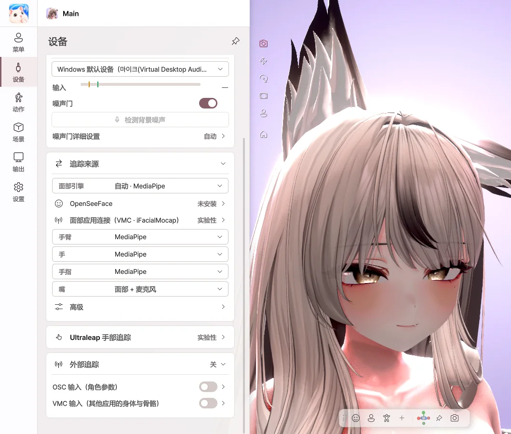

6. 设备
摄像头与麦克风

- 打开 摄像头 开关，即开始面部和手部追踪。
- 在摄像头列表中选择要使用的摄像头。
- 正面校准 — 将当前的面部朝向设为正面。
- 追踪质量 — 与游戏同时使用时，建议选择 均衡 或 节能。
- 打开 麦克风 开关后，说话时嘴巴就会动。
- 噪声门 — 让嘴巴不会因键盘声等杂音而动。
- 检测背景噪声 — 保持安静时点击此按钮，即可自动设定噪声基准。
追踪来源

- 为面部、嘴、头部、眼睛、手臂、手、手指、身体分别选择用什么来驱动。
- 每个部位都可以混用 摄像头、iPhone、VMC、Ultraleap（手）。例如，面部用 iPhone，身体用全身追踪器，手用摄像头。
- 面部引擎 — 选择摄像头引擎或面部应用（iPhone · VMC）。各设备的设置会显示在使用该设备的部位下方。
- 将 嘴 设为 面部 + 麦克风 后，说话时跟随声音，不说话时跟随嘴形。
- 手部防抖 — 静止时让手和手指不会抖动。
全身 · 手指关节（摄像头）
- 将 身体 设为摄像头后，会出现 全身 开关。开启后会跟随摄像头中可见的躯干和腿部，旁边会显示 坐姿 · 站姿 · 腿部追踪 · 腿部推定。
- 在桌前等看不到腿部时，仅凭肩部动作也能让上半身倾斜和转动。看不到的腿部保持角色自身的姿势。
- 将 手指 设为摄像头后，会出现 手指关节追踪 开关。开启后，摄像头会跟随每个手指关节的弯曲、张开以及拇指的动作。
通过 VMC 接收（全身追踪器 · 手套 · 其他应用）
- 在发送端应用（全身追踪器应用、手套应用、动作捕捉应用等）中开启 VMC 发送，并发送到本机。
- 在 追踪来源 中，将要通过 VMC 接收的部位的来源选为 VMC。其他部位可以继续使用摄像头 · iPhone。
- 在 VMC 设置 中确认接收的骨骼数量以及数据是否传入。
- 姿势有偏差时，点击 T 姿势 或 对齐。用 重置 恢复原状。
- 手指会如实反映每个关节的旋转、张开，乃至拇指的动作。
- 通过 VMC 接收手臂时，如果输入中断，手臂会回到桌面（键盘 · 鼠标）姿势。
摄像头（含全身 · 手指关节）、iPhone、VMC 输入已用实际设备确认。标有 实验性 的功能（Ultraleap、OSC 等）预计可以正常运行，但尚未在开发者环境中使用所有设备和应用进行测试。如有问题，请通过 设置 › 诊断 › 发送错误报告 告诉我们。
用 iPhone 进行面部追踪（iFacialMocap · FaceMotion3D）
- 将 iPhone 和电脑连接到同一个 Wi-Fi。
- 在 面部引擎 中选择面部应用 iFacialMocap 或 FaceMotion3D，然后 复制 本机地址。
- 在 iPhone 的 iFacialMocap 应用中，点击齿轮 › Destination IP address（目标 IP 地址），输入该地址。使用 FaceMotion3D 时，请在应用的连接设置中设为发送到本机地址。
- 打开开关后，iPhone 的表情就会应用到角色上。表情如何呈现取决于角色自身的设置（参见 表情的驱动方式）。
- 无法连接时，点击 测试连接，确认是否有数据传入。
iPhone地址（可选） 栏可以留空。仅在 iFacialMocap 应用中不使用 Destination IP address 时才需要填写。
💡 开启 断开时由摄像头接替 后，iPhone 连接断开时，摄像头会暂时代为追踪。